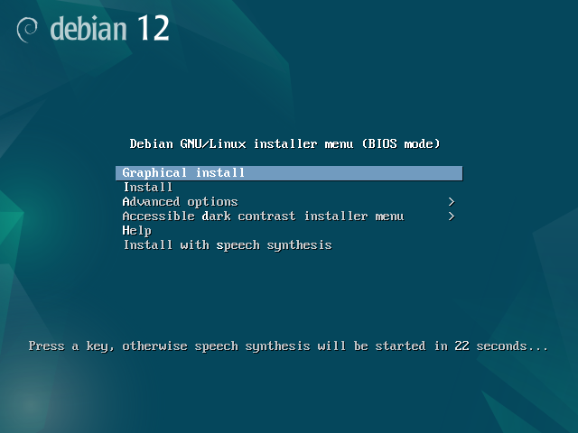
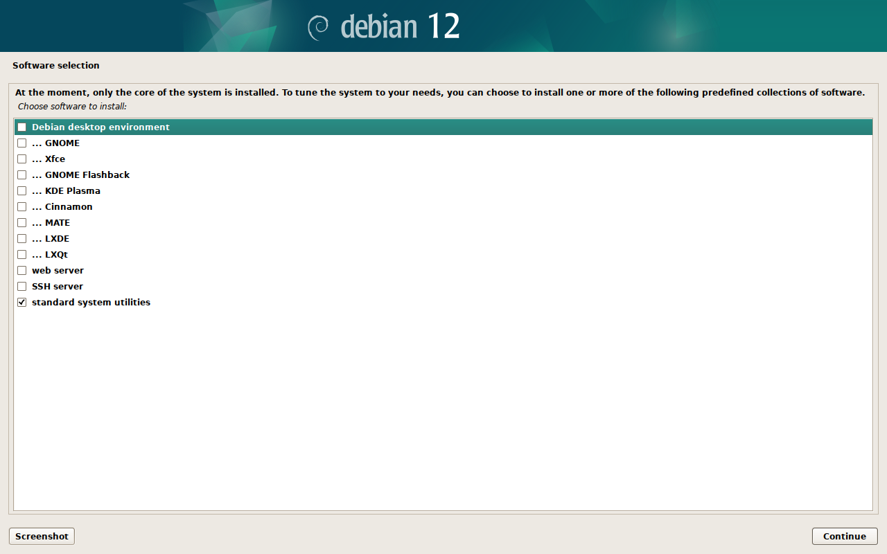
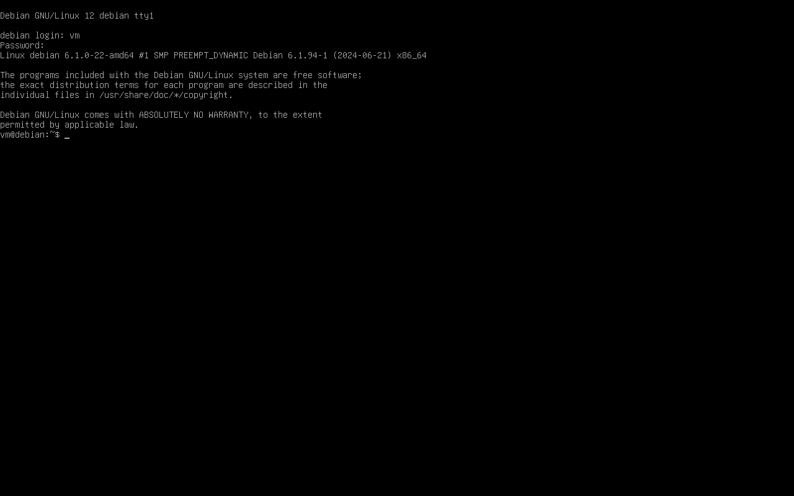
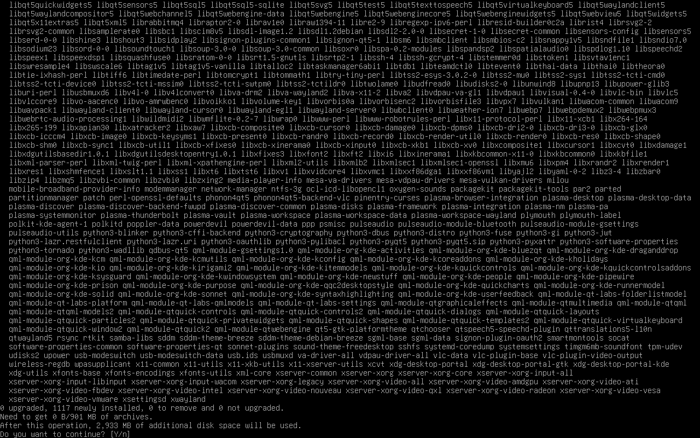
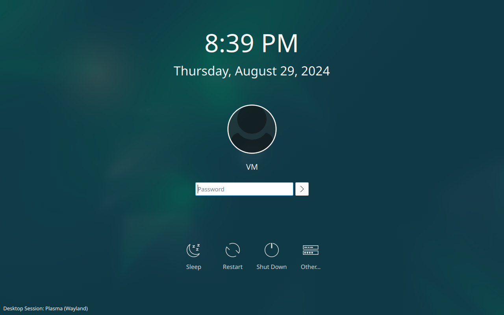
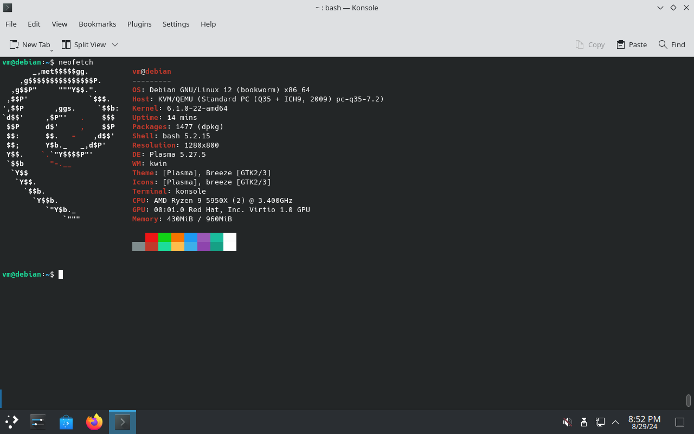
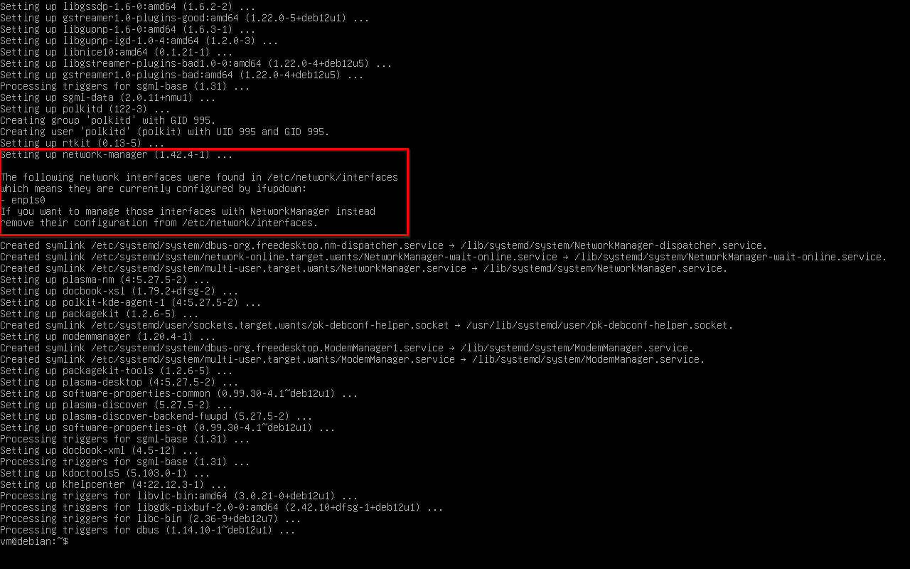

Минималистичный KDE на Debian
Стандартная поставка KDE на Debian не всегда мне подходит. К сожалению, при установке с Live DVD, система будет включать в себя не только много лишних программ (KDE Connect, Konqueror, Akregator, Golden Dict, Juk, IBus, etc.), но и локализации к ним.
К примеру, Firefox ESR, на Live DVD, идёт в комплекте со всеми пакетами l10n. Это значит, что вместе с обновлениями Firefox придётся загружать и обновления соответствующих l10n. То же касается LibreOffice.
Особняком стоит странный набор пакетов, устанавливаемых Live DVD. Например, по каким-то причинам, туда не включён ни один клиент синхронизации NTP! А ещё не включен bash-completion по умолчанию…
Live DVD имеет свои преимущества для начинающих, но, если Вы уже имеете опыт работы с Linux, имеет смысл посмотреть на альтернативные способы установки системы, нежели простейшую установку посредством Calamares.
Я понял, что самый эффективный и минималистичный способ установки Debian с KDE заключается в установке “голой” ОС с базовым набором пакетов и последующей ручной установкой минимального мета-пакета plasma-desktop.
На Live DVD невозможно выбрать список программного обеспечения для установки, поэтому потребуется достать другой образ. Как альтернативу можно взять netinst.
Запускаем установку. В загрузчике выбираем пункт меню Graphical Install.

Все настройки можно оставить как Вам нравится, за исключением шага выбора программного обеспечения (Software Selection). На этом шаге необходимо отключить все графические среды, как на скриншоте ниже. Достаточно оставить только стандартные системные утилиты (standard system utilities).

После успешной установки перезагружаемся, как и предлагает установщик. После перезагрузки нас приветствует терминальный login, а не графический. Входим с созданным в процессе установки пользователем.

На “чистой” системе увидим всего 324 установленных пакета.
$ apt -qq list --installed | wc -l
WARNING: apt does not have a stable CLI interface. Use with caution in scripts.
324
И 1.1G использованного пространства на диске.
$ df -h
Filesystem Size Used Avail Use% Mounted on
udev 462M 0 462M 0% /dev
tmpfs 97M 600K 96M 1% /run
/dev/vda1 19G 1.1G 17G 7% /
tmpfs 481M 0 481M 0% /dev/shm
tmpfs 5.0M 0 5.0M 0% /run/lock
tmpfs 97M 0 97M 0% /run/user/1000
Наконец-то можно установить мета-пакет plasma-desktop. Он достаточно увесист, но исключать из него рекомендуемые пакеты я не могу. В таком случае, система будет “сломана” после установки. Не будет работать меню Plasma, включая главное меню.
Изначально я использовал полноценный kde-plasma-desktop, но меня смущала такая зависимость, как пакет kde-baseapps. Через него “затягиваются” зависимости типа konqueror и kwrite, которыми я никогда не пользуюсь. Вот этот тред на Reddit содержит хороший рецепт из 3-ех пакетов, который я теперь использую:
$ sudo apt install sddm plasma-desktop konsole
Стоит отметить, для меня konsole – обязательный пакет для установки на этом этапе. Без него мета-пакет plasma-desktop может выбрать за Вас какой-нибудь другой эмулятор терминала, к примеру deepin-terminal или zutty.

Установка мета-пакета с рекомендациями – хороший баланс между количеством ручных действий и минимализмом результирующей системы. После установки перезагружаемся.
$ sudo reboot
Логин на этот раз произойдёт через SDDM, который услужливо выберет Plasma Wayland как основную графическую сессию.

На этом этапе можно удалить лишние пакеты от KDE Connect.
$ sudo apt purge kdeconnect --auto-remove
Проверим количество пакетов и занятого пространства:
$ apt -qq list --installed | wc -l
WARNING: apt does not have a stable CLI interface. Use with caution in scripts.
1430
$ df -h
Filesystem Size Used Avail Use% Mounted on
udev 453M 0 453M 0% /dev
tmpfs 97M 1.1M 96M 2% /run
/dev/vda1 19G 4.1G 14G 24% /
tmpfs 481M 0 481M 0% /dev/shm
tmpfs 5.0M 0 5.0M 0% /run/lock
tmpfs 97M 48K 96M 1% /run/user/1000
После установки минимального мета-пакета не будет даже веб-браузера и файлового менеджера, поэтому можно сразу установить, к примеру, Firefox ESR и Dolphin.
$ sudo apt install firefox-esr dolphin
Можем даже установить Neofetch и поделиться результатом.

1477 пакетов. Получившаяся система занимает всего 4.4G на диске.
$ df -h
Filesystem Size Used Avail Use% Mounted on
udev 453M 0 453M 0% /dev
tmpfs 97M 1.1M 96M 2% /run
/dev/vda1 19G 4.4G 14G 25% /
tmpfs 481M 0 481M 0% /dev/shm
tmpfs 5.0M 0 5.0M 0% /run/lock
tmpfs 97M 48K 96M 1% /run/user/1000
Да, не мало, но это полноценная система без “лишних” пакетов. Для сравнения, Live DVD установит Debian с 2650 пакетами! Занимая 9.5G на диске!
Если Вы стремитесь к меньшим значениям, Вам стоит посмотреть в сторону сборки своего рабочего окружения на основе WM вроде Sway, т.к. тюнинг системы дальше будет требовать непропорциональных результатам трудозатрат.
В общем, всё! У Вас есть минимальная система без лишних пакетов, но уже с привычным графическим окружением KDE и веб-браузером. Дальше кастомизировать по Вашему вкусу. Имеет смысл настроить локаль, точки монтирования и много другое…
В большинстве конфигураций, после установки, у Вас не будет списка сетей при нажатии на иконку Networks в трее. Так происходит у меня при установке Debian Bookworm на VM с DLBD образа. Соединение с интернетом, как ни странно, есть.
Это признак того, что в /etc/network/interfaces есть настройки для сетевых интерфейсов, про это есть информационное сообщение в логе установки:

По умолчанию NetworkManager будет игнорировать управление такими интерфейсами. Вот один из способов убрать все настройки интерфейсов из файла /etc/network/interfaces:
$ cat <<EOF | sudo tee /etc/network/interfaces
# interfaces(5) file used by ifup(8) and ifdown(8)
# Include files from /etc/network/interfaces.d:
source /etc/network/interfaces.d/*
EOF
Перезагружаемся. Настройки адаптеров и сетей будут доступны через nmcli и nmtui. Сами сетевые подключения появятся в списке при клике на иконку Networks в трее.
Журнал изменений
30 августа 2024 г.: заменил kde-plasma-desktop на sddm plasma-desktop konsole.